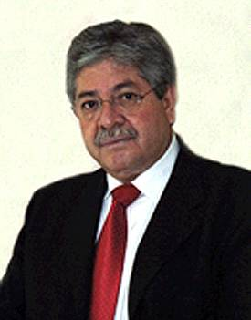

Consejero Óscar Vázquez Marín
Nació en Apozol, Zacatecas, el 17 de febrero de 1952.
Cursó la licenciatura en Derecho en la Facultad de Derecho de la Universidad de Guadalajara, de 1968 a 1973, se tituló el 15 de febrero de 1975, con la tesis Medidas legales para la represión internacional del terrorismo; asistió al “VI Cursos de Posgrado en Derecho, Política y Criminología, Área Procesal”, impartido por la Universidad de Salamanca, España.
Ha impartido clases de “Derecho Penal”, en la Escuela de Derecho de la Universidad Autónoma de Sinaloa, con sede en Mazatlán; “Derecho Penal” y “Práctica Profesional Penal”, en la Facultad de Derecho de la Universidad de Guadalajara; y “Clínica de Derecho Procesal Penal”, en la Universidad Autónoma de Guadalajara. Asimismo, ha impartido los cursos de “Amparo en Materia Penal”, en el Instituto de Especialización Judicial de la Suprema Corte de Justicia de la Nación, Extensión Jalisco; “Amparo y Actualización Penal para Jueces y Secretarios”, en el Supremo Tribunal de Justicia del Estado de Colima; “Procuración de Justicia para los Agentes del Ministerio Público del Estado de Jalisco” y “Procedimiento Penal”, en la Universidad de Guadalajara; “Diplomado en Materia Penal y de Amparo”, en la Universidad de Colima; “Diplomado en Derecho Constitucional y Amparo”, en la Universidad Panamericana, Sede Guadalajara; “Derecho Procesal Penal”; “Curso Básico de Formación y Preparación para Secretarios”, en el Instituto de la Judicatura Federal, Extensión Ciudad Juárez, Chihuahua; y adicionalmente, ha sido participante y ponente en diversos foros, seminarios, congresos y conferencias.
Artículo “El juicio de amparo en materia penal", en el Boletín Judicial del Poder Judicial del Estado de Colima, Quid Juris, Época I, Núm. 8, Colima, 30 de junio de 1994; artículo "La inspección y supervisión de los órganos jurisdiccionales federales en México", en Estudios en homenaje a Don Jorge Fernández Ruiz, Derecho procesal, UNAM, Instituto de Investigaciones Jurídicas, marzo de 2005; artículo "Requisitos Jurídicos Formales de los Medios de Impugnación en Materia Electoral”, en el libro Comentarios a la Ley General del Sistema de Medios de Impugnación en Materia Electoral, editado por el Senado de la República, LIX Legislatura y el Colegio Nacional de Magistrados de Circuito y Jueces de Distrito del Poder Judicial de la Federación, julio de 2006; artículo “La vigilancia de los Órganos Jurisdiccionales Federales en México” en Revista Mexicana de Justicia, Procuraduría General de la República, Sexta Época, Núm. 14, octubre de 2006; artículo “La inspección y vigilancia de los juzgadores en el Consejo de la Judicatura Federal”, en Judicatura e Impartición de Justicia en México, Porrúa, 2007; artículo "Los juicios orales en México: ¿condición o alternativa del sistema acusatorio?", en Revista del Instituto de la Judicatura Federal, Núm. 24, diciembre de 2007; y, artículo "Los juicios orales en la justicia local: un breve estudio sobre los sistemas de Nuevo León, Chihuahua, Estado de México y Oaxaca", en Reforma Judicial, revista mexicana de justicia, Instituto de Investigaciones Jurídicas de la UNAM, Núm. 11, enero-junio 2008.
Se ha desempeñado como: Actuario del Juzgado Primero de lo Criminal en Guadalajara, Jalisco; y pasante en Derecho, en el Bufete Jurídico Gratuito de la Universidad de Guadalajara.
Dentro del Poder Judicial de la Federación ha ocupado los siguientes cargos: Actuario y Secretario del Juzgado de Distrito en el Estado de Sinaloa; Secretario de Tribunal Colegiado en Materia Penal del Primer Circuito; Secretario del Juzgado Primero de Distrito en Materia Penal en el Estado de Jalisco; Secretario del Primer Tribunal Colegiado del Tercer Circuito; Secretario de Estudio y Cuenta de la Primera Sala de la Suprema Corte de Justicia de la Nación; Juez Primero de Distrito en Materia Penal en el Estado de Jalisco, Magistrado del Tercer Tribunal Colegiado del Sexto Circuito; Magistrado del Segundo Tribunal Colegiado en Materia Civil del Tercer Circuito; Magistrado del Primer y Segundo Tribunales Colegiados en Materia Penal del Tercer Circuito; Visitador Judicial del Consejo de la Judicatura Federal; en sesión ordinaria celebrada el 19 de febrero del 2003, el Pleno del Consejo de la Judicatura Federal lo designó como encargado del despacho de la Visitaduría Judicial, con efectos a partir del uno de marzo de 2003; el mismo Pleno en sesión celebrado el 18 de junio del mismo año, acordó designarlo como Visitador General del Consejo de la Judicatura Federal, con efectos a partir del 25 de junio de 2003; durante este último nombramiento, fue designado por el H. Pleno de la Suprema Corte de Justicia de la Nación en sesión del 18 de abril de 2006, para integrar temporalmente la comisión investigadora para el ejercicio de la facultad establecida en el párrafo segundo del Artículo 97 de la Constitución Política de los Estados Unidos Mexicanos, sobre el caso relacionado con presunta violación de garantías en contra de la periodista Lydia Cacho Ribeiro. El 27 de noviembre de 2006, fue nombrado Consejero de la Judicatura Federal por el Pleno de la Suprema Corte de Justicia de la Nación.